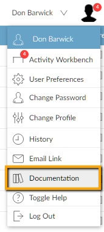

The includes learning resources, videos and help pages that cover how to set up and use the modules and features of . The text you are reading now is part of the .
To open the from OA, move the mouse pointer over your profile picture and in the user menu, click  Documentation.
Documentation.

This displays the homepage. You can also open the documentation by clicking one of the links in the side-frame help. This displays whichever topic the link refers to.
Moving around the
You can read different topics in the documentation by:
- Clicking a link in the text to jump to a different topic.
- Clicking the topic title in the documentation menu.
- Clicking the or buttons in the title area; these take you to the topic before or after the current one in the menu. You can also click the logo to go to the introductory topic.
- Using the Search to find other topics.
From v11.08 onwards, to make the accessible from OA, set the SY parameter DOCBASE to
https://www.coins-global.com/resources/documentation/ukusa/Default.htm
Individual users may also need to allow popups from this URL.
You can modify the online documentation so that it reflects the way you use ; you can add annotations, change the text of topics, or add your own topics.
You can update the online documentation to the latest version, without taking a upgrade.